Common Practices for Data Management
General overview and learning objectives
Aim
This module aims to provide an overview on common practices in managing public health data. We will review common health data sources, data collection methodologies which may result to different data types, then discuss the main steps of the data management cycle - from design of a study, an information or surveillance system, collection, extractions, entry, manipulation, summarization, analysis, visualization, and interpretation and data use.
We will review common practices of data handling usingSpreadsheet programs e.g., using MSExcel, Calc, Google Sheets for basic data management such as dealing with missing data, detecting and correcting outliers and errors, joining/merging files, summarizing and visualization. Discussing their pros and cons, then briefly introduce the benefits of using reproducible approaches when managing data. Details of these approaches and tools will be learnt in other Modules.
The module contains hands-on practicals and class activities in order to put the theoretical knowledge into practice.
Time
This section is expected to take a maximum of 2 hours split into three steps:
- Presentation of materials from facilitators/trainers - interactive;
- Class activities with plenary discussions;
- Individual activities.
Most activities for this module will be done during the session, however, as we are proceeding to other modules/sessions with more hands on activities, participants are encouraged to practice in their spare time to master skills and improve learning outcomes.
Definition of terms
Let’s revisit and refresh on a few terminologies commonly referred to when talking about public health and data.
Health
The World Health Organization (WHO) defined health in its 1948 constitution as “a state of complete physical, mental and social well-being and not merely the absence of disease or infirmity.” (WHO Constitution, 1948)
Public Health
The “art and science of preventing disease, prolonging life and promoting health through the organized efforts of society” (Acheson, 1988; WHO)
The “the science and art of preventing disease, prolonging life, and promoting health through the organized efforts andinformed choices of society, organizations, public and private communities, and individuals.” (CEA Winslow, CDC)
The revised definition (by CDC) has some additional terms:Science and informed choices. Let’s look at few of them:
What is Science?
Several definitions exist, a common one includes … the pursuit and application of knowledge and understanding of the natural and social world following a systematic methodology based on evidence.
- Scientific methodology e.g., observation, experimental investigation;
- Measurements - identification, description, indicators;
- Data;
- Evidence:
- Theoretical explanation.
What is an informed choice?
- Decision that is consistent with its goals and values;
- Unbiased;
- Utilize evidence-based information;
- Provide several options.
Now it unfolds to the core components:
Data
Facts or a collection of facts about something that can be used for reasoning, decision-making or planning, e.g., for public health. Once processed, organised and put into context data can be used generate information that offers great input during the decision-making process, to draw conclusions and make predictions.
Public health (surveillance) data
Data that can be used to evaluate impact or monitor progress e.g., of a health program or interventions, give information that helps to determine appropriate public health interventions, to determine populations at risk, where to target interventions, to determine success, gaps, challenges, guide public policy and practices.
Data management
Refers to the entire process from the time the data is captured/collected to the point it is utilized for the decision-making process.
See Figure 1.
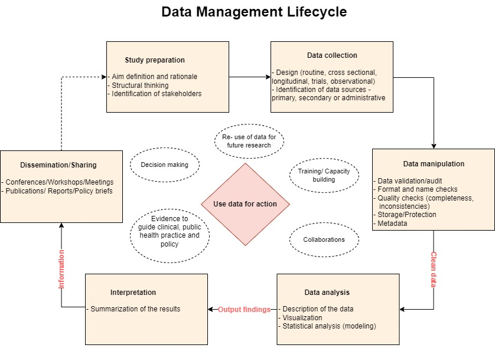
Looking at this Figure, we are saying, in other words, Data Management is everything that supports a programs/projects “data lifecycle” steps; the architectures, policies, practices and procedures to take you to the Use of Data for Action.
We will come back to this later.
Public health data
Sources
Public health data may originate from various sources including the following:
- Routine disease surveillance systems;
- Medical/clinical records - diseases/conditions (outpatients, admissions), births, deaths that happens in the care delivery facilities (in some cases also at community). Electronic systems such as DHIS2 captures such data;
- Service data - medicines/supplies available/used, tests/procedures, medical devices. These data may be captured electronically or paper-based information systems. e.g., LMIS, DHIS2;
- Research and surveys: e.g., DHS, MIS, MICS, AIS, SPA, health and demographic surveillance system (HDSS) and others;
- Administrative, e.g., human resources, finances and other logistic data;
- Vital statistics - this may overlap with routine data, but may include events captured by the vital registration systems happening at facilities and communities;
- Census; and,
- Literature - gray and published - literature review may provide critical complementary and useful data/information to answer public health questions
No matter where your data comes from, always be sure to check that it is of good quality - valid, complete, and clean - before analyzing and utilizing.
Usefulness and utilization
Data plays a vital part in health research and practice. Properly managed health data will help to provide us with unbiased information.
Where available, public health data may be useful to provide understanding on the health status of the population, patterns and trends of diseases, assess if interventions put in place are working and guide practical and policy decisions.
Important questions public health data can be used to answer include the following:
- What is the (main) problem?
- Who is mostly affected? e.g., subpopulation?
- Where is mostly affected? e.g., areas, locations, subunits, microlevels (spatial units).
- Why is this mostly affected? how or the associated factors
- When is the most effect? Temporal trend? Seasonal pattern?
- At what extent?
- What direction? e.g., river flow
Data and system challenges
Due to heterogeneity in nature of data journey, sources, methods of collection, and volume, public health data encounter a number of constraints which may influence its utilization.
These are sometime referred to as Data quality dimensions and may include but not limited to the following attributes:
- Completeness - captured but not reported;
- Timeliness - late reporting;
- Availability - captured, reported but not accessible for use;
- Incomplete/poor recording - some important variables or attributes not captured;
- Consistency - Always tells the similar fact/story;
- Aggregated - masked important information relevant for decision; and
- Big data - an ambiguous dimension.
Lets explore a bit about Big data.
Main characteristics include:
- Volume: the amount of data collected at once;
- Velocity: the rate at which data comes in - e.g., weekly malaria surveillance data;
- Variety: many types of data. Ref: Routine surveillance data discussed earlier;
Other features includes Veracity - the quality of the data, the accuracy, do we have it all? And lastly,Value - do we have the ability to transform these mountains of data into useful information for use?
Take note of these characteristics when discussing a need for real-time surveillance data, daily, weekly vs. its management.
Arguments that it is better to have minimal useful data in real time and best utilized than lots of data at a low speed and poorly utilized. Your choice!
As the data grows bigger, more advanced skills and tools are required to manage it.
Data management process
Data management is a process with various steps.
Let’s re-visit the previous graphical presentation of the Data Management Cycle.
The process begins with Study design (incl Protocol, tools and databases) and continues until the time you share/communicate the outputs from your analysis. These outputs aim to provide the end-users information that is an essential input ingredient for action or decision making process.
Steps in the middle including collection procedures, cleaning/validation, organizing (creating metadata, new variables) and quality control checks, storage, security (confidentiality, protection/access) sub-setting, sharing protocols/agreements, are equally important.
Data organization and analysis is usually guided by the objectives.
When presenting and interpreting results/information generated from data, take note of the audience. Packaging and repackaging is crucial.
The main goal of managing your data is to generate information that will provide useful and likely sufficient evidence that gives accurate and needed knowledge to the right audience for the purpose of answering the research/policy questions or guide the decisions needed to have effective surveillance system.
Note:
- Data and Information are used interchangeably - do not mean the same thing; Information is in most cases derived from Data.
- Data can be reused several times for several purposes. Keep an open mind.
- Variations on skills to analyse and manipulate may hinder optimal data utilization.
- Data Integration is important and should be considered:linking and combining data from other sources to optimize insights and evidence generation.
- Publishing data: some data is made accessible to the public (at a cost or freely). Consider - data from others may be useful to your work and your data may be useful to others.
What should good data look like
A well-structured data frame is crucial for efficient data wrangling in R and other data analysis tools. Good data organization minimizes errors, simplifies analysis, and ensures that your data can be easily understood and manipulated by both humans and machines.Below are key aspects of what good data should look like and common pitfalls to avoid:
1. Consistent and Clear Column Names
Why It Matters: Column names should be descriptive, concise, and consistent. They should clearly indicate what data each column contains, using underscores or camelCase instead of spaces.
Common Mistake: Using spaces in column names, which can complicate scripting and automation in R. For example, use total_cases instead of Total Cases.
2. One Variable per Column
Why It Matters: Each column should represent only one variable. This structure allows for straightforward data manipulation and analysis. ~
Common Mistake: Storing multiple variables in a single column. For example, combining age and gender into one column instead of having separate age and gender columns.
3. One Observation per Row
Why It Matters: Each row in a data frame should represent one distinct observation. This makes it easier to aggregate, filter, and analyze data.
Common Mistake: Spreading observations across multiple rows or combining several observations into one row. For instance, recording results from multiple experiments or time points in a single row.
4. Avoiding Empty Cells and Inconsistent Data Entry
Why It Matters: Empty cells and inconsistent entries can lead to errors in data analysis and make it difficult to perform accurate calculations or data wrangling operations.
Common Mistake: Leaving cells empty instead of using a consistent placeholder (like NA) for missing data, or entering different spellings or formats for the same category (e.g., Male, M, and male in a gender column).
5. No Merged Cells
Why It Matters: Merged cells can confuse data wrangling scripts and make it difficult to read data programmatically.
Common Mistake: Merging cells in Excel to create a visually appealing layout, which disrupts the underlying data structure.
6. Consistent Data Types
Why It Matters: Ensuring that each column contains data of a consistent type (e.g., all numeric, all text) allows R to perform operations without errors.
Common Mistake: Mixing data types within a single column, such as having numbers and text in the same column, which can lead to conversion errors or incorrect analyses.

Data manipulation using Spreadsheets
This subsection will focus on a few common practices used during data manipulation using Microsoft Excel program.
Why we think this is important:
-
There is evidence that MSExcel is the most used tool for managing data (visualize and analyze) by the malaria control program’ M&E officers and some MoH/HMIS officers in many countries. May be less for researchers (SPSS, STATA)
-
Some tasks need to be performed either repetitively or for many units (districts, health facilities, annually, monthly, etc)
-
Some tasks require managing very large data, multiple datasets and manipulating large number of indicators
-
MAP is aiming to build (spatial) capacities and strengthen analytical skills to; NMCPs, researchers and students, in particular, those working in malaria endemic countries.
-
Spreadsheets are great tools for data management and may be sufficient to perform several analytical tasks - have distinct functionalities.
-
We would like to build skills in using an alternative tool with different set of distinct functionalities.
Reading and exploring the data file
The file routine_data.csv (within Data in your folders) contains simulated routine malaria cases for a certainFakeland. Files (with extension *.csv) can be opened using MSExcel program.
The data contains monthly facility-based reported tested and confirmed malaria cases for under fives and adults (over 5s) populations for year 2018. The file has a total of 1200 observations, with a total of 7 Admin 1 and 46 Admin2 units, and 100 health facilities.
Task 1 (Individual - 5 mins)
Activity:
- Open the file
routine_data.csv- you may use MSExcel or any other software you wish- Explore the data, variables, values - missingness, outliers, typos, errors
- Check the names of adm1, adm2
- Check year
Feedback: Class plenary discussion (5 minutes)
- What software did the participants used to read and explore the data?
- What observations were found?
- Any errors, mistakes that are obvious? Any outlying records?
Task 1: Compiled steps using MSExcel
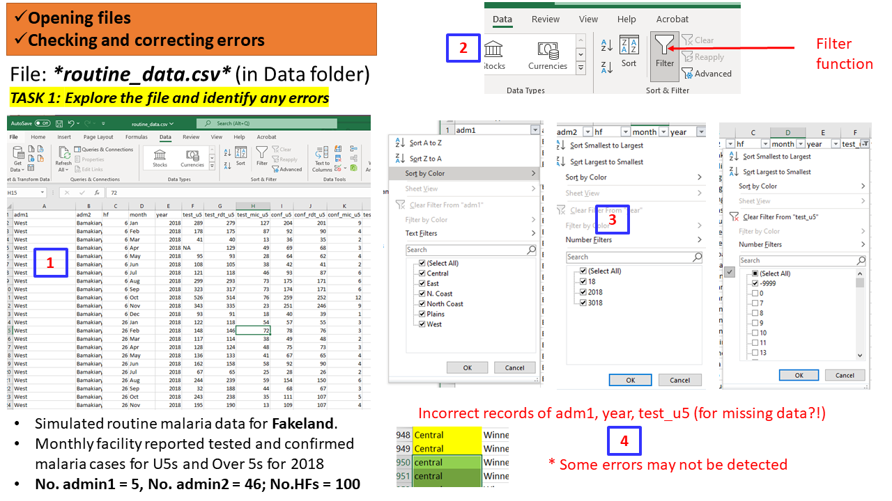
Solution to Task 1 using R scripts
# Use the function `read_csv()` to read the file dat0 <- read_csv("data/routine_data.csv") # only the path to the folder 'data' is provided since the entire >pipeline is organized in a 'Project' # To see the full path use the function `getwd()` # Explore the data (call the object/name assigned) using functions `str()`, `head()` and `summary()` str(dat0)## spec_tbl_df [1,200 × 17] (S3: spec_tbl_df/tbl_df/tbl/data.frame) ## $ adm1 : chr [1:1200] "West" "West" "West" "West" ... ## $ adm2 : chr [1:1200] "Bamakiary" "Bamakiary" "Bamakiary" "Bamakiary" ... ## $ hf : num [1:1200] 6 6 6 6 6 6 6 6 6 6 ... ## $ month : chr [1:1200] "Jan" "Feb" "Mar" "Apr" ... ## $ year : num [1:1200] 2018 2018 2018 2018 2018 ... ## $ test_u5 : num [1:1200] 289 178 41 NA 95 108 121 299 323 526 ... ## $ test_rdt_u5 : num [1:1200] 279 175 40 129 93 105 118 293 317 514 ... ## $ test_mic_u5 : num [1:1200] 127 87 13 49 28 38 46 73 73 76 ... ## $ conf_u5 : num [1:1200] 204 92 36 69 64 42 93 175 174 259 ... ## $ conf_rdt_u5 : num [1:1200] 201 90 35 68 62 41 87 171 171 252 ... ## $ conf_mic_u5 : num [1:1200] 9 4 2 3 4 2 6 6 6 12 ... ## $ test_ov5 : num [1:1200] 317 193 45 137 101 115 134 352 394 684 ... ## $ test_rdt_ov5: num [1:1200] 137 73 25 66 57 58 66 229 265 540 ... ## $ test_mic_ov5: num [1:1200] 63 36 8 25 18 22 25 56 62 80 ... ## $ conf_ov5 : num [1:1200] 272 104 47 79 83 49 108 335 391 554 ... ## $ conf_rdt_ov5: num [1:1200] 255 97 44 74 77 46 101 321 374 525 ... ## $ conf_mic_ov5: num [1:1200] 11 5 2 3 4 2 7 12 14 24 ... ## - attr(*, "spec")= ## .. cols( ## .. adm1 = col_character(), ## .. adm2 = col_character(), ## .. hf = col_double(), ## .. month = col_character(), ## .. year = col_double(), ## .. test_u5 = col_double(), ## .. test_rdt_u5 = col_double(), ## .. test_mic_u5 = col_double(), ## .. conf_u5 = col_double(), ## .. conf_rdt_u5 = col_double(), ## .. conf_mic_u5 = col_double(), ## .. test_ov5 = col_double(), ## .. test_rdt_ov5 = col_double(), ## .. test_mic_ov5 = col_double(), ## .. conf_ov5 = col_double(), ## .. conf_rdt_ov5 = col_double(), ## .. conf_mic_ov5 = col_double() ## .. ) ## - attr(*, "problems")=<externalptr>head(dat0)## # A tibble: 6 × 17 ## adm1 adm2 hf month year test_u5 test_…¹ test_…² conf_u5 conf_…³ conf_…⁴ ## <chr> <chr> <dbl> <chr> <dbl> <dbl> <dbl> <dbl> <dbl> <dbl> <dbl> ## 1 West Bamak… 6 Jan 2018 289 279 127 204 201 9 ## 2 West Bamak… 6 Feb 2018 178 175 87 92 90 4 ## 3 West Bamak… 6 Mar 2018 41 40 13 36 35 2 ## 4 West Bamak… 6 Apr 2018 NA 129 49 69 68 3 ## 5 West Bamak… 6 May 2018 95 93 28 64 62 4 ## 6 West Bamak… 6 Jun 2018 108 105 38 42 41 2 ## # … with 6 more variables: test_ov5 <dbl>, test_rdt_ov5 <dbl>, ## # test_mic_ov5 <dbl>, conf_ov5 <dbl>, conf_rdt_ov5 <dbl>, conf_mic_ov5 <dbl>, ## # and abbreviated variable names ¹test_rdt_u5, ²test_mic_u5, ³conf_rdt_u5, ## # ⁴conf_mic_u5summary(dat0)## adm1 adm2 hf month ## Length:1200 Length:1200 Min. : 1.00 Length:1200 ## Class :character Class :character 1st Qu.: 25.75 Class :character ## Mode :character Mode :character Median : 50.50 Mode :character ## Mean : 50.50 ## 3rd Qu.: 75.25 ## Max. :100.00 ## ## year test_u5 test_rdt_u5 test_mic_u5 ## Min. : 18 Min. :-9999.00 Min. : 0.0 Min. : 0.00 ## 1st Qu.:2018 1st Qu.: 81.25 1st Qu.: 84.0 1st Qu.: 18.00 ## Median :2018 Median : 136.00 Median :138.0 Median : 34.00 ## Mean :2008 Mean : 35.13 Mean :164.7 Mean : 47.36 ## 3rd Qu.:2018 3rd Qu.: 222.00 3rd Qu.:224.5 3rd Qu.: 61.00 ## Max. :3018 Max. : 702.00 Max. :702.0 Max. :381.00 ## NA's :22 ## conf_u5 conf_rdt_u5 conf_mic_u5 test_ov5 ## Min. : 0.0 Min. : 0.0 Min. : 0.000 Min. : 0.0 ## 1st Qu.: 48.0 1st Qu.: 47.0 1st Qu.: 0.000 1st Qu.: 88.0 ## Median : 82.0 Median : 81.0 Median : 1.000 Median :147.0 ## Mean :104.2 Mean :103.1 Mean : 2.507 Mean :180.9 ## 3rd Qu.:141.0 3rd Qu.:140.0 3rd Qu.: 3.000 3rd Qu.:245.0 ## Max. :552.0 Max. :551.0 Max. :51.000 Max. :831.0 ## NA's :2 ## test_rdt_ov5 test_mic_ov5 conf_ov5 conf_rdt_ov5 ## Min. : 0.0 Min. : 0.00 Min. : 0.0 Min. : 0.0 ## 1st Qu.: 46.0 1st Qu.: 11.75 1st Qu.: 61.0 1st Qu.: 59.0 ## Median : 82.0 Median : 20.50 Median :104.0 Median :100.0 ## Mean :112.1 Mean : 25.88 Mean :139.1 Mean :133.9 ## 3rd Qu.:147.2 3rd Qu.: 36.00 3rd Qu.:190.2 3rd Qu.:184.0 ## Max. :802.0 Max. :133.00 Max. :729.0 Max. :715.0 ## ## conf_mic_ov5 ## Min. : 0.000 ## 1st Qu.: 1.000 ## Median : 2.000 ## Mean : 3.765 ## 3rd Qu.: 4.000 ## Max. :86.000 ### Tabulate unique records for adm1, adm2 and year - note of various ways to get the output with(dat0, table(unique(adm1)))## ## central Central East N. Coast North Coast Plains ## 1 1 1 1 1 1 ## West ## 1unique(dat0$adm2)## [1] "Bamakiary" "Bonmi" "Buoadara" "Buseli" "Bwiziwo" ## [6] "Cadagudeey" "Cakure" "Caya" "Dakoga" "Gakingo" ## [11] "Galkashiikh" "Gotou" "Guinikoto" "Kanyabare" "Kanyemfya" ## [16] "Kidobar" "Kokam" "Lalaba" "Lamanya" "Laoye" ## [21] "Lastouni" "Mabangata" "Madinbinda" "Makabondo" "Malemkolela" ## [26] "Marandre" "Mbidima" "Mbono" "Namaba" "Niaya" ## [31] "Othasii" "Rumoni" "Siabakala" "Siago" "Tangue" ## [36] "Tchimari" "Ushiranga" "Winnedua" "Yagoloko" "Yakos" ## [41] "Yenagbo" "Yorolesse" "Youko" "Yumka" "Zikishi" ## [46] "Zila"with(dat0, table(unique(year)))## ## 18 2018 3018 ## 1 1 1dat0 %>% group_by(year) %>% count(year)## # A tibble: 3 × 2 ## # Groups: year [3] ## year n ## <dbl> <int> ## 1 18 12 ## 2 2018 1176 ## 3 3018 12
Cleaning the data and saving cleaned datafile
Scanning through the data variables (see the outputs of the functions
used in the Solution using R script summary(),with(dat0, table(unique(adm1))) anddat0 %>% group_by(year) %>% count(year)) we have
observed the following:
- Missing values: Records of the variable test_u5 includeNA and -9999
- Error in records: Year recorded as 18 (in 12 instances) and 3018 (in 12 instances);
- Names of Admin 1:“North Coast” recorded as “N. Coast”;
- Did you notice the mismatch between “central” and“Central”? We have in fact only 5 adm1 levels and not 7.
Some of these seems like obvious errors/typos and can be easily corrected.
To do this in a spreadsheet we can for instance apply Find and Replace”* or filter options to the data and the variable with mistakes (at least to avoid searching the entire file) then do the needed corrections.
Task 2 (Group - 10 minutes)
Team: Form a group of 4 participants to work on the task.
Activity: Using the file
routine_data.csv
- Explore the data, variables, values - missingness, outliers, typos, errors
- Check the names of adm1, adm2, and year
- Correct the records with obvious mistakes/errors in these variables
- In the variable test_u5 set -9999 values to NAs
- Save the cleaned datafile and name itroutine_data_clean.csv or you may opt to Save As MSExcel file >(.xls/.xlsxl.
Feedback: Two (2) groups will be called to demonstrate (5 minutes)
Solution to Task 2 using R scripts
## Read the file dat0 <- read_csv("data/routine_data.csv") ## Convert the variable "month" to an ordered factor dat0$month <- factor(dat0$month, levels = month.abb) # Note: There is in R a variable called month.abb ## Clean the names of adm1, year records, create date variable dat1 <- dat0 %>% mutate(adm1 = recode(adm1, "N. Coast" = "North Coast", "central" = "Central"), year = recode(year, '3018' = 2018, '18' = 2018)) %>% unite(date, year, month, sep = "-", remove = F) %>% mutate(date = ymd(parse_date_time(date, "ym"))) ## Clean the missing values to have a common format (*-9999* or *NA*) dat1$test_u5[dat1$test_u5 == -9999] <-NA ## Save the file as new data with name *routine_data_clean.csv* using the `write_csv()` function write_csv(dat1, "data/routine_data_clean.csv") #View(dat1)Task 2: Compiled steps using MSExcel
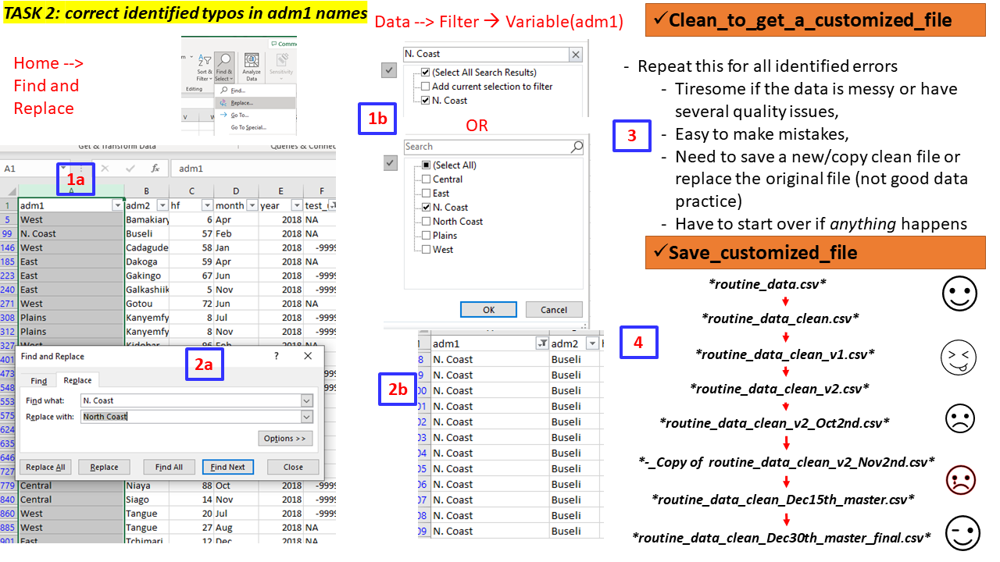
Collapsing data by groups
Sometimes you may need to summarise/aggregate your data to specific groups or categories of age, sex, adm1, adm2 or monthly to allow you to perform specific tabulations or visualizations.
In Spreadsheet/MSExcel Pivot Tables can be applied to perform such tasks, then save the summarized tables either as separate files or add in a new sheet in the existing MSExcel file. Note: the .csv. file may need to be converted to .xls. to allow adding formulas (retaining), multiple sheets, plots/charts
Task 3 (Group - 15 minutes)
Team: Same groups of 4 people.
Activity: Using the file
routine_data_clean.csv
- Aggregate the data by the following
- adm1 (name: aggreg_adm1)
- adm2 (name aggreg_adm2)
- months (name aggreg_monthly)
- Either save these as separate files OR Add them as new sheet to your data
Task 4 (Group - 10 mins)
Using the files/sheets
routine_data_clean.csv, andaggreg_adm1:
- Create new variables as follows
- total_tested which is a SUM of test_u5 and test_ov5
- total_conf which is a SUM of conf_u5 and conf_ov5
Feedback: Two (2) groups will be called to demonstrate (5 minutes)
Tasks 3 and 4: Compiled steps using MSExcel
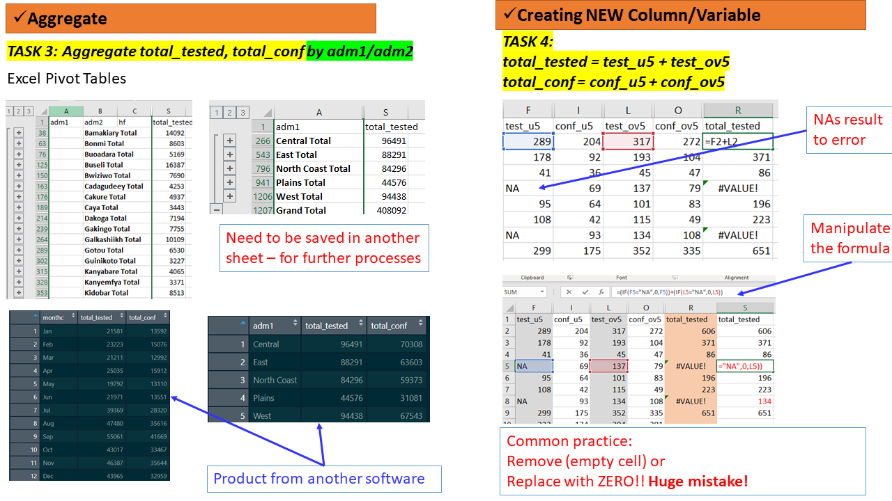
Solution to Tasks 3 and 4 using R scripts
dat1 <- read_csv("data/routine_data_clean.csv") ggplot(data = dat1, aes(x=test_u5, y=conf_u5, color= month)) + geom_point()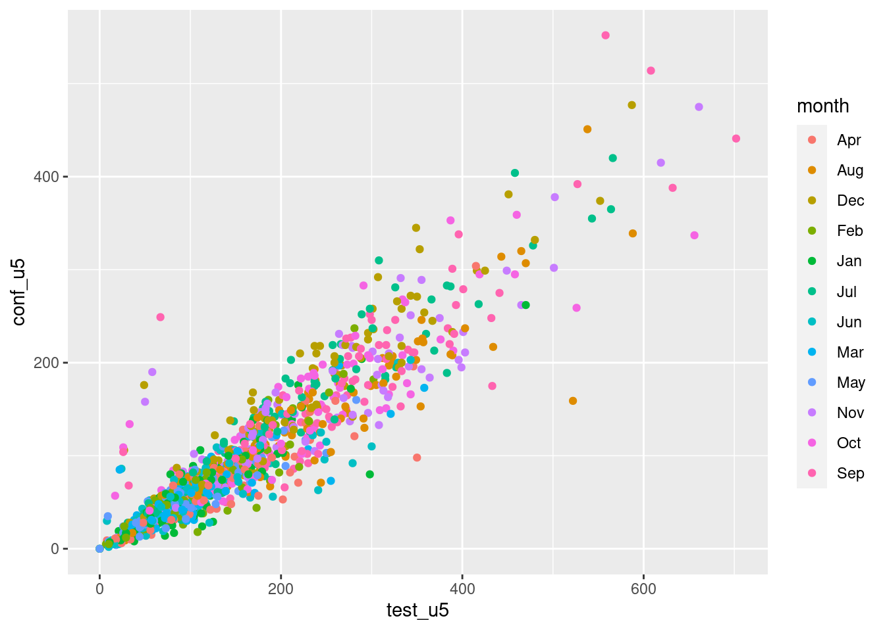
# Main file dat1 <- dat1 %>% rowwise() %>% mutate(total_tested = sum(test_u5, test_ov5, na.rm = TRUE), total_conf = sum(conf_u5, conf_ov5, na.rm = TRUE )) # Quick plots boxplot(dat1$total_conf ~ dat1$adm1)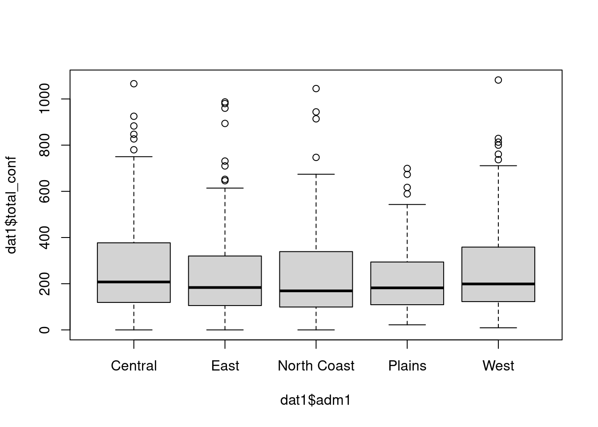
# Aggregate at adm 1 and save the output file dat_adm1 <- dat1 %>% group_by(adm1) %>% summarise(total_tested = sum(test_u5, test_ov5, na.rm = TRUE), total_conf = sum(conf_u5, conf_ov5, na.rm = TRUE )) write_csv(dat_adm1, "data/aggreg_adm1.csv") # Aggregate at adm 2 and save the output file dat_adm2 <- dat1 %>% group_by(adm2) %>% summarise(total_tested = sum(test_u5, test_ov5, na.rm = TRUE), total_conf = sum(conf_u5, conf_ov5, na.rm = TRUE )) write_csv(dat_adm2, "data/aggreg_adm2.csv") # Aggregate monhtly and save the output file dat_months <- dat1 %>% group_by(month) %>% summarise(total_tested = sum(test_u5, test_ov5, na.rm = TRUE), total_conf = sum(conf_u5, conf_ov5, na.rm = TRUE )) write_csv(dat_months, "data/aggreg_monthly.csv")
The summarized/aggregated files now can be used to create needed Summary Table
Table 1: Total Confirmed Cases at Admin1
Solution to Making a Summary Table for a selected Indicator using R
scripts
| adm1 | total_conf |
|---|---|
| Central | 70308 |
| East | 63603 |
| North Coast | 59373 |
| Plains | 31081 |
| West | 67543 |
Merging files
The file population.csv includes adm2 population statistics for Under5s(u5s), adults(ov5) and the all ages(total) for the year 2018. The columns in this file include adm1, adm2,pop_u5, pop_ov5 and pop_total. So ideally, we need to have the pop_ columns aligned with the right administration units in the file with the surveillance data.
We would like to merge this population statistics to our main cleaned dataset routine_data_clean.csv or the aggregate datasetaggreg_adm2.csv for further manipulation e.g., calculating crude incidence rates.
To do that in a MSExcel we can use functions such as VLOOKUP, INDEX & MATCH or apply Power query.
Depending on where the population.csv file is saved, the Syntax generated has to ensure it reads the correct file path or sheet.
Let’s do this task with the cleaned fileroutine_data_clean.csv.
Task 5 (Group - 15 minutes)
Team: Same groups of 4 people.
Activity: Using the files/sheets
routine_data_clean.csvandpopulation.csv: - merge the two files to have the population statistics in the same file as the incidence data
Solution to Task 5 using R scripts
Details of how you build these scripts will be taught in next sessions of this course.
Tasks 5: Compiled steps using MSExcel
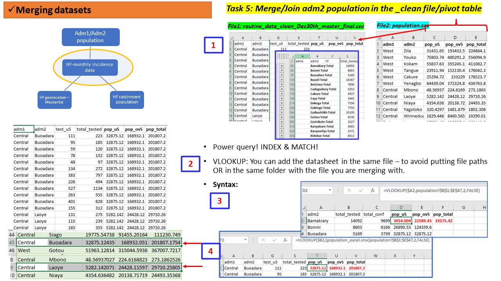
Visualization - assessing temporal/monthly trends
To be able to assess the monthly or temporal trend of an indicator, a subset/summarised table need to be prepared.
This process in Spreadsheet will include combining multiple steps such as Pivot table by month, save the table in a separate file/sheet, making the plot (based on the available options) then see how the months will be ordered to a proper calendar order and not alphabetically.
In cases where Pivot table seems to be less convenient, another software could be used to summarise the data, then move it back to MSExcel for plotting.
There had been instances where the Summary tables are produced manually.
In case several summarizations/visuals are needed, the task has to be done repeatedly.
Plotting monthly trend for selected indicator using R scripts
Visualization - assessing spatial patterns
Similarly, if one needs to assess the pattern of selected indicators by adm1 or adm2 of age group, a subset of a summarised data needs to be prepared, then plotted.
-
Some spreadsheet (most updated versions) can be used to generate simple maps showing spatial distribution of your indicators. However, that requires preparing the data to an exact format needed for the plot - hence one has to go through the Pivoting process or other means of aggregating the data e.g., at adm1 or adm2 level then generate the maps.
-
Tasks take longer if spatial patterns have to be assessed for multiple dimensions e.g., age groups (u5/ov5), annually, monthly.
-
Tasks may be impossible if spatial patterns need to be assessed at finer resolutions. Processing of shapefiles and polygons is not entirely incorporated in Spreadsheets. Other mapping software such as ArcGIS or QGIS may be useful.
Task 6 (Group - 15 minutes)
Team: Same groups of 4 people.
Activity:Using the files
dat_adm1.csvanddat_adm2.csv:
- Using MSExcel, make a barplot of the total_tested andtotal_conf for adm1 and adm2 in a descending >ordertotal_tested .
- Customize the plot for the colour, format, labels, etc as you wish
- Save the chart/figure in a image format of your choice to allow it to be used in a report.
Solution to Task 6 using R scripts
# Read the adm2 aggregaed data dat_adm2 <- read_csv("data/aggreg_adm2.csv") # bar plots with change of data format from wide to long # with selection of color palettes dat_adm2 %>% tidyr::pivot_longer( cols = total_tested:total_conf, names_to = "group", values_to = "counts" ) %>% mutate(group2 = factor(group, levels = c('total_tested', 'total_conf'))) %>% ggplot(aes(x=reorder(adm2, -counts), y=counts, fill= group2)) + geom_bar(stat="identity", position=position_dodge()) + # scale_fill_brewer(palette="Reds") + scale_fill_manual(values=c('black','gray60')) + labs(fill = "Indicator", x= "Adm2") + #scale_fill_manual(values = c('darkgrey', 'firebrick')) + theme_bw() + theme(axis.text.x = element_text(angle = 90, vjust = 0.5, hjust=1))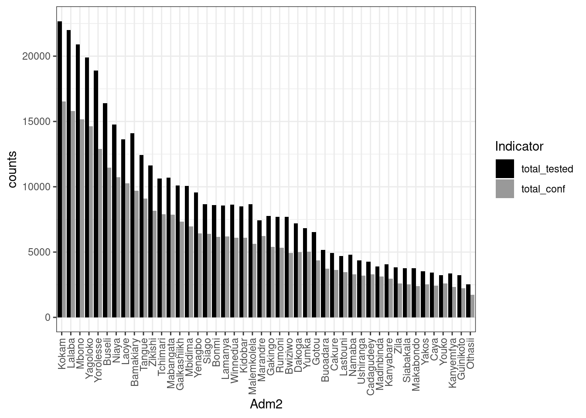
ggsave("outputs/tested+confirmed.adm2.png")
An extra step
Making overall and monthly maps of incidence rates using R
scripts
# Reading the Fakeland shapefile + join with the incidence_dm2_popn data
fak.shp <- st_read("shapefiles/FAK_HDs.shp", quiet = T) %>%
left_join(dat_adm2_popn,by =c("adm2"))
ggplot(fak.shp) +
geom_sf(aes(fill = crude_inc_total), color = "transparent") +
#scale_fill_viridis_c("Cases per 1000 PYO", trans = "sqrt") +
scale_fill_viridis_c(option = "B", trans = "pseudo_log", breaks = c(100,1000,510000, 50000)) +
labs(title = "Raw incidence 2018 at Admin2 level", subtitle = "All age") +
theme_void() +
theme(legend.position = "bottom", legend.key.width = unit(1.5, "cm"))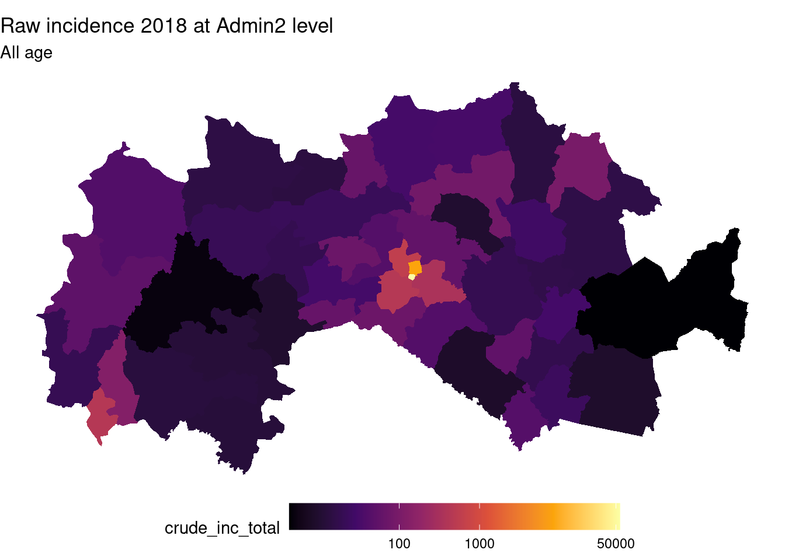
fak.shp_m <- st_read("shapefiles/FAK_HDs.shp", quiet = T) %>%
left_join(dat1,by =c("adm2")) %>%
left_join(popn,by =c("adm2")) %>%
mutate(month = factor(month, levels = month.abb),
total_tested = sum(test_u5, test_ov5, na.rm = TRUE),
total_conf = sum(conf_u5, conf_ov5, na.rm = TRUE ),
crude_inc_total = (total_conf/pop_total)* 12 *1000)
ggplot(fak.shp_m) +
geom_sf(aes(fill = crude_inc_total), color = "transparent") +
#scale_fill_viridis_c("Cases per 1000 PYO", trans = "sqrt") +
scale_fill_viridis_c(option = "B", trans = "pseudo_log", breaks = c(100,1000,510000, 50000)) +
labs(title = "Raw incidence 2018 at Admin2 level", subtitle = "All age") +
theme_void() +
theme(legend.position = "bottom", legend.key.width = unit(1.5, "cm"))+
facet_wrap(~month)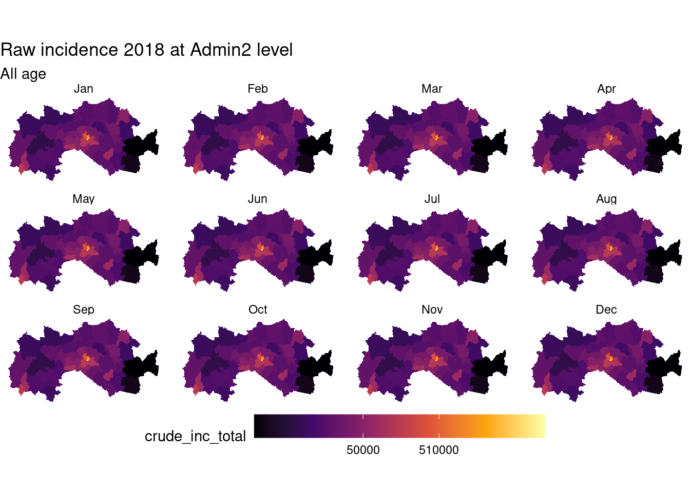
Class plenary discussion
Some guiding questions:
- Lessons, experiences, challenges
- What task was easy to do? Why?
- What task was the most difficult to do? Why?
- What task do you think has/had a high chance of making mistakes?
Which of the methods would you prefer using when presenting your data e.g., in a report
- Tables only? Why?
- Figures only? Why?
- Both Tables and Figures? Why?
Summary: Microsoft Excel for Data management
A. What is GOOD about it?
- Ease of learning and use – small datasets, few indicators
- Friendly user interface and Graphic user interface
- point and click
- all-in-one - compact - data entry, summarize, visualize, analyse
- Comes with a number of beautiful functionalities incl. addons - sort, remove duplicates, edit, filter, do math, collapsing, freeze panes, work with dates (with tears if you dont know how to work around these), changes across worksheets, add notes/comments,
- Great for a quick fix for small datasets
- Requires minimal analytic and programming skills
- Supports community, online lessons (LinkedIn)
B. What may NOT be GOOD about it?
- You have some limitations when you need to go advanced! incl. data dimensions
- Control of the manipulation is in the User hands - each task is manually done hence may take longer
- Hard to document and keep track of all the steps made - lack of reproducibility
- Data manipulation processes exploded or not feasible when the data is large; multiple workbooks, indicators, levels, etc
- The software is not free and not open source
Resources:
Several online tutorials available online to teach you advanced concepts to use spreadsheets.
Data carpentry
[https://datacarpentry.org/spreadsheet-ecology-lesson/00-intro/index.html] - a free module on how to manage data using spreadsheets.
[https://www.linkedin.com/learning/advanced-and-specialized-statistics-with-stata]
Note - If you feel comfortable working with Spreadsheets that is completely fine - If it annoys you that is also fine - challenge yourself and learn something NEW!
Alternative software and tools for managing data
The Figure below presented selected software recorded to be commonly used to manipulate, analyse, visualize, explore data
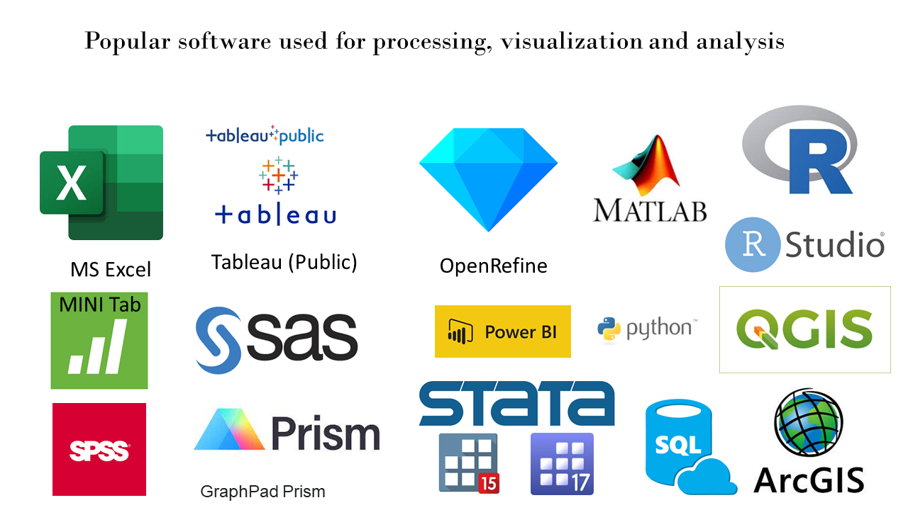
Analyze/visualize
- R/RStudio (Free/Opensource)
- Python (Free/Opensource)
- Stata (Licensed)
Map making
- Quantum GIS, aka QGIS (Opensource)
- Arc GIS (Licensed)
R/RStudio and QGIS will be taught in detail from Module 2 of the course.
Conclusion
- Generation of best information, knowledge and evidence from the data (small or big) starts from how well it was managed (collected, summarized/analyzed, presented).
- Several tools exist. Always! Choose a tool that you are most comfortable to work with; less prone to making errors in the process, and right for the task at hand;
- Best tool should allow you, or someone else to replicate the tasks (if needed) and reproduce the outputs without too much hustle;
- Think of your audience when generating outputs from your data - literacy, time, and purpose - should be easily communicated, easy to interpret to generate the needed knowledge
- Keep data ethics